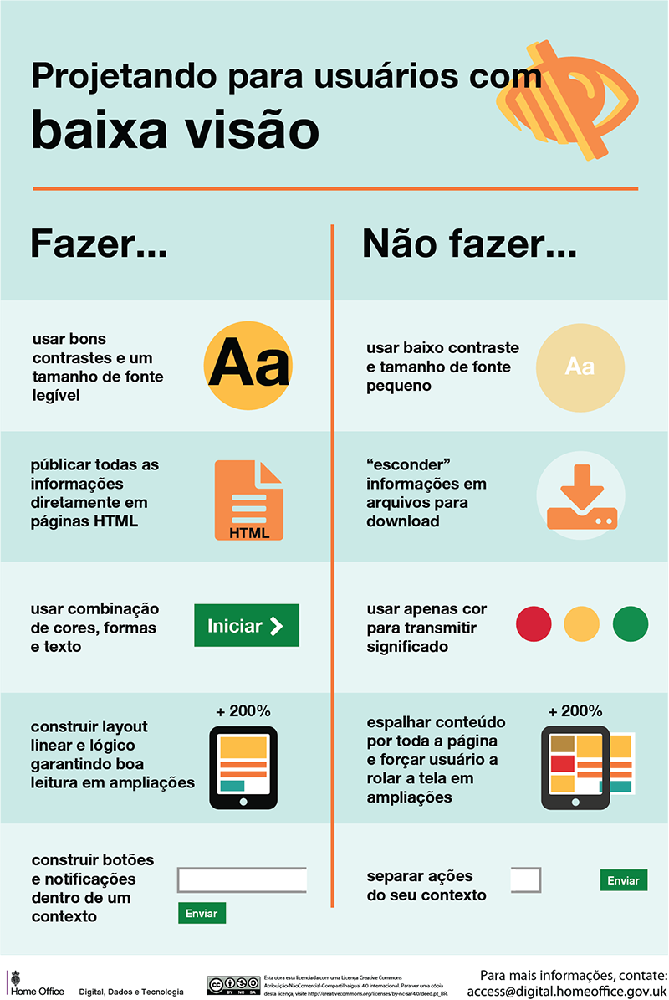

Principais Dificuldades
- Dificuldades em obter informações apresentadas visualmente
- Interagir usando um dispositivo diferente do teclado
- Distinguir rapidamente os links num documento
- Navegar através de conceitos espaciais
- Distinguir entre outros sons uma voz produzida por síntese
